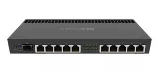

Switches (conmutadores
Son dispositivos que operan en la capa de enlace de datos del modelo OSI y se encargan de dirigir los paquetes de datos dentro de una red local (LAN). A diferencia de los hubs, que simplemente transmiten los datos a todos los dispositivos conectados, los switches envían los datos específicamente al dispositivo de destino, lo que mejora la eficiencia de la red. Los switches utilizan las direcciones MAC (Media Access Control) para realizar este enrutamiento. En redes más grandes, los switches pueden formar parte de una topología de red jerárquica, como la de acceso, distribución y núcleo. |
|
Routers (enrutadores):
Estos dispositivos operan en la capa de red (capa 3) y se utilizan para conectar diferentes redes, como una red local (LAN) con Internet o con otras LANs. Los routers determinan la mejor ruta para enviar los paquetes de datos a su destino, basándose en direcciones IP. Usan protocolos como el RIP (Routing Information Protocol) o el OSPF (Open Shortest Path First) para intercambiar información sobre rutas entre ellos. Además, permiten la segmentación de redes y facilitan la comunicación entre redes con diferentes protocolos. |
|
Hubs (concentradores)
Son dispositivos más simples que también operan en la capa de enlace de datos, pero a diferencia de los switches, los hubs no tienen la capacidad de dirigir los datos específicamente a un dispositivo. En lugar de eso, envían los datos a todos los dispositivos conectados, lo que puede generar tráfico innecesario y reducir la eficiencia de la red. Son menos utilizados hoy en día debido a que los switches ofrecen una mayor eficiencia. |
|
Bridges (puentes)
Los puentes funcionan en la capa de enlace de datos y se utilizan para conectar dos redes o segmentos de red similares, filtrando el tráfico de datos entre ellos. Ayudan a reducir el tráfico innecesario y segmentar redes más grandes, mejorando el rendimiento y reduciendo las colisiones. Al operar en la capa de enlace, los puentes pueden examinar las direcciones MAC de los paquetes y decidir si deben ser transmitidos o bloqueados. |
 |
Gateways (puertas de enlace)
Son dispositivos más complejos que operan en diferentes capas del modelo OSI, generalmente en las capas de aplicación, presentación y sesión. Los gateways permiten la comunicación entre redes que usan diferentes protocolos, como cuando se conecta una red con un sistema telefónico (VoIP) a una red de datos o entre una red de IPv4 y una red de IPv6. También pueden realizar conversiones entre diferentes tipos de codificación y de protocolos de comunicación. |
|